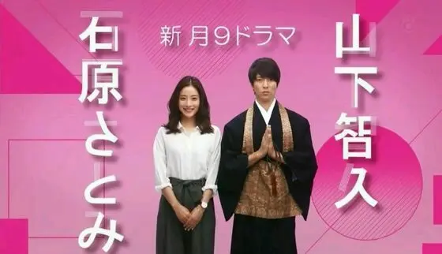

Drama japonais From 5 to 9
💕 Il y a quelques temps, j’ai vu la très sympathique série japonaise 5-ji Kara 9-ji Made: Watashi ni Koi Shita Obōsan, ou en anglais : From 5 to 9 (titre beaucoup plus simple à retenir !), sortie en 2015.
Résumé
Sakuraba Junko, jeune professeure d’anglais dans une école privée de Tokyo, rêve de partir vivre à New York. Elle économise depuis des années, dans l’espoir d’aller y retrouver son professeur qu’elle aime.
Un jour, durant une cérémonie funéraire au temple, elle renverse malencontreusement l’urne de cendres sur le bonze qui officie, Hoshikawa Takane. C’est alors le coup de foudre… pour lui. Il s’arrange avec la famille de Junko pour organiser un rendez-vous en vue d’un mariage. Junko n’est évidemment pas intéressée et elle fait tout pour se débarrasser de ce personnage un peu trop insistant.
Elle en arrive à passer un marché avec lui : si elle reste une semaine au temple, et prouve ainsi qu’elle ne peut pas devenir la femme de ce grand moine, alors il la laissera tranquille. Elle est persuadée de se libérer, car elle n’est pas habituée à entreprendre toutes les tâches traditionnelles qui incombent à ce genre de personnage.
Malheureusement, son tempérament est très apprécié des autres bonzes qui passent de bons moments à travailler avec elle, et elle est si fière qu’elle ne supporte pas de mal faire les choses face à la grand-mère de Takane, et face à sa rivale que la vieille a fait venir dans l’intention d’humilier Junko. Junko se donne alors beaucoup de mal pour réussir.
Elle n’y parvient pas, mais malgré son échec, elle commence à apprécier Takane. Leurs rencontres de plus en plus fréquentes et pas forcément hasardeuses - il est tout le temps en train de la suivre - les rapprochent. Ils finissent par sortir ensemble et doivent persuader la grand-mère qu’ils peuvent être en couple tout en s’occupant du temple.
Mon avis
Série très drôle et dynamique. Comme dans tout drama, des situations et conflits sont un peu exagérés et parfois, rendent les réactions des personnages incompréhensibles ou complètement démentes (quand Takane va sous la cascade pour se remettre les idées en place, excellent). Cependant, on rit beaucoup, on s’attache aux personnages et on a bizarrement envie de les voir ensemble. Leurs histoires sont touchantes, leur audace et leur maladresse aussi.
J’adore Tomohisa Yamashita qui interprète le bonze. Je l’ai vu dans plusieurs séries (Nobuta wo produce, Dragonzakura), c’est un excellent comédien. Il est chanteur aussi, mais je n’ai pas écouté ses musiques (Jpop et R&B… Ça doit être bizarre 🤨). Bref, je le trouve toujours très marrant, et sa façon d’être si inexpressif est tout à fait expressive !
J’ai apprécié cette petite série, mais je ne la reverrai sans doute pas. Il y en a tellement de ce genre à découvrir 🤓.